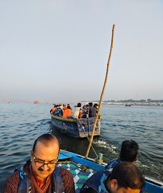
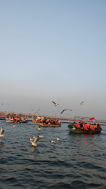
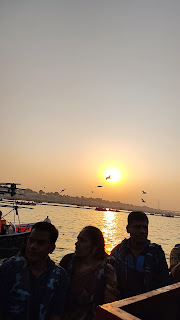
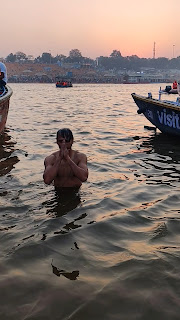
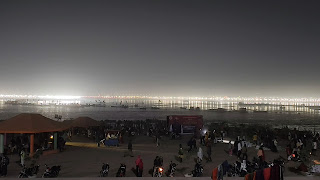
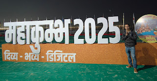

Maha Kumbh 2025: A Divine Experience
The Rarity of Maha Kumbh
The Maha Kumbh Mela, occurring once every 144 years, is a once-in-a-lifetime spiritual event. It follows a unique planetary alignment, making it more auspicious than the regular 12-year Kumbh cycle. During this period, cosmic energies are believed to be at their peak, offering an unparalleled opportunity for spiritual purification and enlightenment.
Shahi Snan: The Sacred Ritual
At the heart of Maha Kumbh is the Shahi Snan (Amrit Snan), the holiest ritual performed at the Triveni Sangam. Led by revered saints and sadhus, this dip is believed to cleanse sins, grant divine blessings, and open the path to moksha (liberation). The three Shahi Snan dates are: Makar Sankranti (Jan 14th), Mauni Amavasya (Jan 29th), and Basant Panchami (Feb 3rd).
The Decision & Planning
I wouldn't call myself deeply religious, but I have always been drawn to the spirituality within Hindu culture and heritage. On January 20th, an inner calling urged me to experience Maha Kumbh 2025. Though my neighbour friend Puneet invited me to join him on January 22nd, prior commitments made it impossible to join him — however I worked out my travel dates.
Determined to witness this grand spectacle, I set my sights on Basant Panchami's Shahi Snan — the last and final Shahi Snan. I discussed it with my wife. While she liked the idea, she felt it would be too hectic for our 12-year-old, and we couldn't leave him alone — she encouraged me to go. Despite soaring flight costs, I booked my tickets for February 2nd–3rd and began gathering travel insights from neighbours who recently went, as well as online sources.
Arrival in Prayagraj
On my flight, I met a TCS Test Manager who was also heading for Maha Kumbh. He shared accommodation insights, which I planned to leverage since I had no prior reservations.
After a delayed landing at 2 PM, I met my taxi driver (a contact from my office colleague). My plan was to reach Boat Club by 3 PM and take a boat to Triveni Sangam, but the overwhelming crowd had other plans.
Navigating Through Chaos
As we neared the Mela area, heavy traffic redirected us to Naini Bridge. My driver tried dropping me near Arail Ghat (closer to Sangam), but the congestion forced me to walk from Naini Bridge to reach Boat Club.
The Boat Ride to Triveni Sangam
At 4:45 PM, I caught the last motorboat to Sangam. Excitement surged through me, but midway, the boat ran out of diesel! After a brief delay, another boat towed us until our boatmen arranged fuel. Just as we neared Triveni Sangam, the engine stopped again! Miraculously, they fixed it, and we continued.
The scene was surreal — seagulls gliding above, the Yamuna's blue-green waters, and the majestic ghats in the backdrop. We reached Sangam at sunset (5:30 PM).

The boat ride to Triveni Sangam

Seagulls gliding above the sacred waters

Sunset at Triveni Sangam
A Sacred Dip at Triveni Sangam
Wasting no time, I changed into shorts and jumped into the water from the boat. As I touched the cold, sacred waters, I felt a sense of surrender — letting go of doubts, fears, and worldly burden. A deep inner stillness — a pause in life's chaos. Then I took three dips — one for myself and two for my family. With every dip I felt a sense of belonging, bliss, and completeness.
After 10–15 minutes, I returned to the boat and changed into dry clothes, only to find that the boat wouldn't start again! Some passengers deboarded at Arail Ghat, while others waited for another boat.

The sacred dip at Triveni Sangam
Exploring Arail Ghat & Finding Shelter
The serene evening at Arail Ghat made me consider staying overnight for the Amrit Snan. After some tea and snacks, I walked towards Chakra Madhav Ghat, hoping to cross the Pippa Bridge to explore the other side for accommodation, but all platoon bridges had closed by then.
With no other choice, I searched for accommodation and found an ashram offering dormitory beds for a nominal price. The tent had 10–15 beds with blankets and later got crowded with many devotees overnight. I explored Someshwar Ghat, and then later in the ashram joined a gathering around the head Baba. I met an interesting Polish couple and a devotee from Odisha. Their stories and devotion made for a memorable night.

Night at the ashram

Evening at the ghats
Amrit Snan – A Surreal Experience
With mosquitoes and noise keeping me awake the whole night, I rested until 4 AM. By 4:30 AM, I left the ashram for Amrit Snan, carrying nothing but faith.
Just 50 metres away, I reached Sangam-Someshwar Ghat, where only 100 devotees were present. The well-maintained and wide ghat offered a peaceful, chaos-free setting for the sacred dip. I went to a lonely area away from the crowd and took the dip. The icy water felt like a shock, but as I submerged, it was pure bliss — a moment of surrender, a spiritual rebirth.
Completing my Shahi Snan at Brahma Muhurtham felt surreal. I returned to the ashram, changed, and rested briefly before heading out at 5:30 AM. By then, all bridges were closed, and devotees were being redirected to nearby ghats for Snan.
Returning Amidst the Crowds & Uncertainty
Navigating the post-Snan chaos, I began my journey back to the airport via Arail Ghat, facing: a 5 km walk to Leprosy Square, a local police-advised e-bus, and another bike ride to the airport.
The 6:30 AM bike ride with a stranger through bumpy, deserted roads was freezing and eerie, yet deep down, I knew nothing would go wrong on this journey. I reached the airport by 7:30 AM, boarded my flight to Bangalore, and gazed out the window, reflecting on my life-changing experience.
Reflections on the Sacred Journey
I consider myself incredibly fortunate to have experienced the sacred dip at Triveni Sangam during Maha Kumbh 2025. I wasn't sure what I was seeking at Maha Kumbh 2025, but something about this grand confluence of faith, tradition, and devotion pulled me in.
It felt less like a planned journey and more like a divine calling — as if unseen forces were guiding me every step of the way. From the moment I decided to go, things just fell into place. Despite the overwhelming crowds, closed bridges, and uncertain accommodations, I somehow found myself exactly where I needed to be. The challenges I faced — delayed flights, boat breakdowns, and last-minute lodging — only added to the sense that this journey was meant to happen.
The Shahi Snan was the most profound moment. As I stepped into the icy waters, the chaos faded — just me, the sacred rivers, and a deep sense of stillness. It wasn't just a ritual; it was a release, a surrender. The water, believed to be infused with divine nectar, carried an inexplicable power, making me feel lighter and more connected.
The Maha Kumbh Snan is a great leveller, transcending social, economic, and cultural boundaries. At Triveni Sangam, distinctions dissolve — everyone, from ascetics and spiritual leaders to common devotees, stands equal in pursuit of purification and divine blessings.
As I left Prayagraj, I knew I wasn't returning the same person. Maha Kumbh wasn't just an event — it was a journey of renewal, faith, and something beyond words.
🙏 Har Har Mahadev! Har Har Gange! 🙏